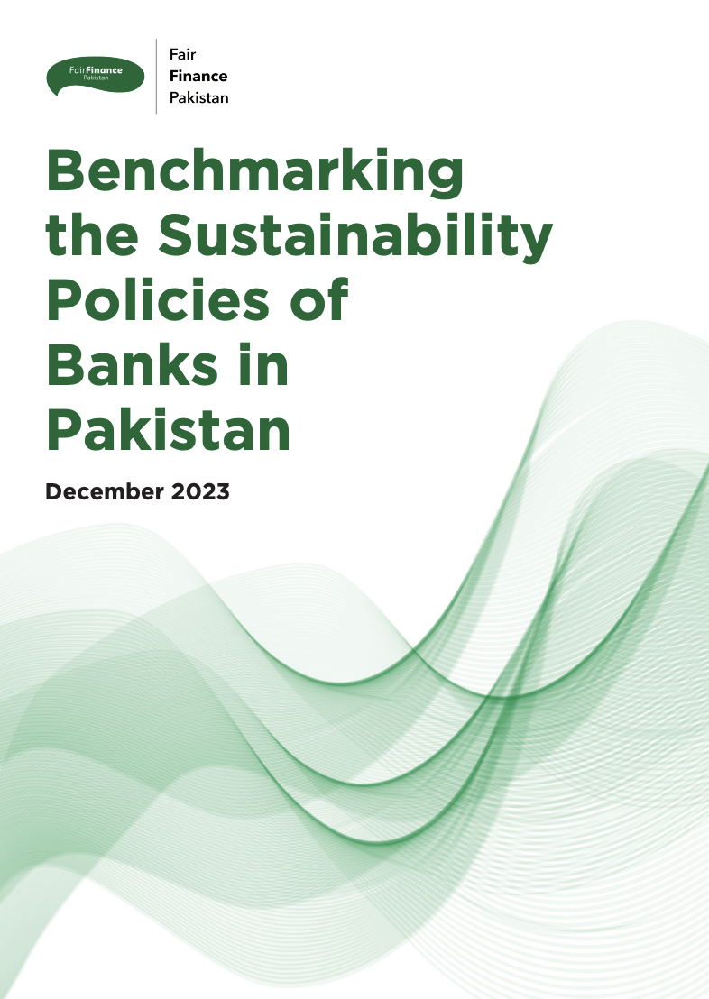
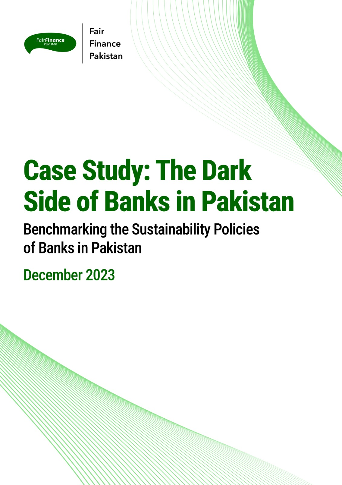

Our Mission
Our Mission
About Us
Fair Finance Pakistan advances responsible finance by linking research, regulation, accountability, and cross-sector collaboration.
Fair Finance Pakistan (FFP) advances the integration of environmental, social, and human-rights standards within Pakistan's financial system, positioning responsible finance as a center pillar of equitable and sustainable development.
Operating as the national platform of the Fair Finance International (FFI) network, FFP works to ensure that financial institutions align capital allocation with internationally recognised sustainability norms.
Our Mission
Our Mission
Our Mission
Our Vision
How We Work
The governance of capital, how it is allocated, regulated, and monitored, fundamentally shapes development trajectories, environmental outcomes, and social equity. FFP seeks to reposition finance as a strategic lever for climate resilience, social justice, and inclusive economic transition.
FFP works across the full arc from research to regulation, combining rigorous methodology with multi-stakeholder engagement to drive systemic change in Pakistan's financial sector.
Benchmarking commercial banks against global sustainability standards using the Fair Finance Guide methodology.
Advancing system-level financial governance reforms at the intersection of environmental risk and regulation.
Convening regulators, banks, civil society, and academics to build shared frameworks for responsible finance.
Connecting global research expertise with national policy reform through leading institutional partnerships.
Our Work
Using the Fair Finance Guide International methodology, FFP systematically assesses commercial banks across critical thematic areas. These assessments provide an evidence-based foundation for policy reform, enabling regulators, investors, and civil society to evaluate the alignment of financial institutions with international sustainability norms.
Alignment of capital flows with climate risk frameworks and Paris Agreement commitments.
Assessment of nature-related financial risks and ecological impact disclosures.
Consistency with UN Guiding Principles on Business and Human Rights and OECD Guidelines.
Exposure to sectors linked to environmental health risks, including air quality and industrial emissions.
Integration of gender-lens indicators in lending, investment, and institutional governance.
Disclosure practices, accountability structures, and alignment with global sustainable finance frameworks.
Policy Leadership
FFP has played a catalytic role in advancing system-level financial governance reforms in Pakistan, particularly at the intersection of environmental risk, public health, and financial regulation.
#LegislateNow
Through its national #LegislateNow initiative, FFP advanced a new policy paradigm, reframing air quality governance within the broader architecture of financial stability, industrial transition, and responsible investment. This work contributed to evidence-based policy dialogue that informed the constitutional recognition of the right to a clean, healthy, and sustainable environment under Article 9A of the Constitution of Pakistan.
International Collaboration
FFP's work is anchored in international partnerships that connect global research expertise with the national policy landscape, strengthening Pakistan's capacity to integrate sustainability risks into financial decision-making.
Featured Initiative · 2025
Convened in collaboration with the UC Davis Air Quality Research Center (AQRC), this landmark series brought together regulators, financial institutions, scientists, multilateral organisations, industry leaders, and civil society to operationalise a finance-science-policy convergence model for clean-air governance and industrial emissions mitigation.
Policy Framework Contribution
FFP has contributed to policy dialogue surrounding Pakistan's National Green Taxonomy and broader sustainable finance reforms within the country's financial regulatory architecture, helping align domestic frameworks with international sustainability norms.
Institutional Network
Fair Finance Pakistan operates through a diverse coalition, ensuring that financial governance reforms are informed by varied expertise and grounded in societal priorities. Through this collaborative model, FFP advances a clear vision: financial systems must evolve to serve both economic prosperity and societal well-being.
Evidence generation and sustainability analytics.
Consumer rights and public engagement.
Scholarly expertise and independent assessment.
Grassroots voice and public interest.
Global methodology and international standards.
Our Coalition Members

Reports
Finance and Governance | Sustainability
Explores opportunities to strengthen Pakistan's sustainable finance ecosystem, outlining practical pathways to institutionalize fair finance principles, enhance regulatory frameworks, and mobilize responsible investment for inclusive and climate-resilient growth.

Climate And Nature | Energy And Extractives
Examines the economic, environmental, and policy risks of relying on fossil fuel to address energy security challenges in Pakistan, offering insights into more sustainable and resilient alternatives for the country's energy future.

Finance | Human Rights | Regulations | Governance
This landmark assessment evaluates leading Pakistani commercial banks against global sustainability standards using the Fair Finance Guide International methodology across key thematic areas including climate change, biodiversity, and human rights.

Consumer Protection | Human Rights
This case study uncovers critical social and environmental risks linked to banking practices in Pakistan, offering insights into consumer protection frameworks and opportunities for strengthening responsible finance.

Climate And Nature | Inclusive Business | Just Transition | Stakeholder Engagement
Co-authored with the UC Davis Air Quality Research Center, this policy brief evaluates Pakistan's national and provincial clean-air frameworks and proposes evidence-based industrial transition pathways to achieve measurable improvements in air quality.
Contact Us
Have a question, a partnership idea, or a media inquiry? Send us a message and our team will get back to you.